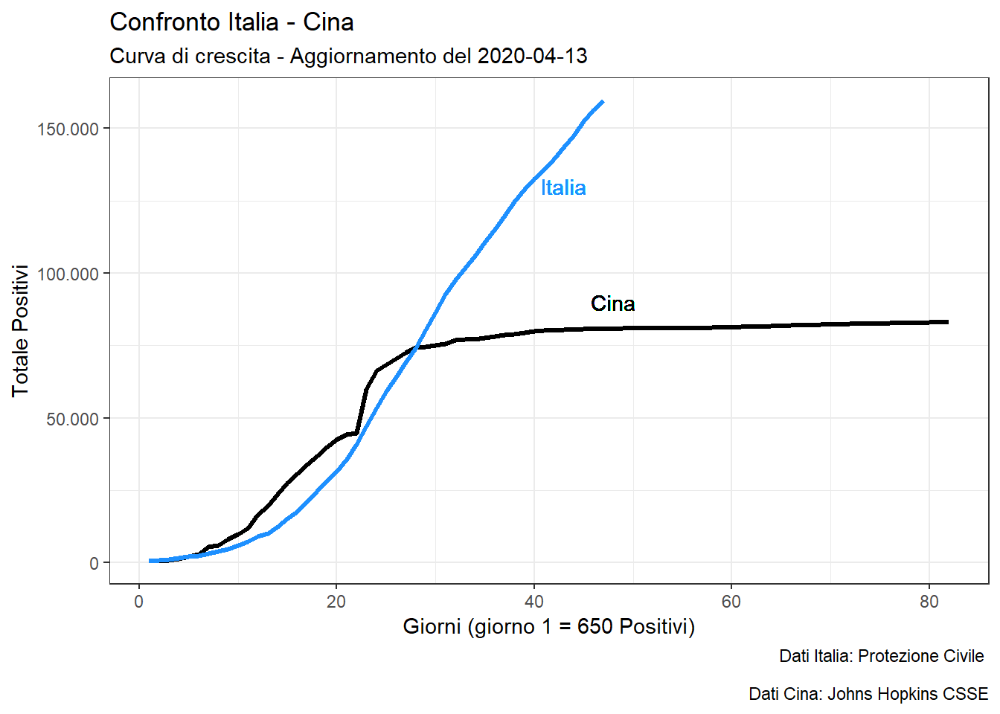

devtools::install_github("covid19r/coronavirus")
library(ggplot2)
library(coronavirus)
library(dplyr)
theme_set(theme_bw())
library(scales)# get China data
data("coronavirus")
y <-
coronavirus %>%
filter(Country.Region == "China") %>%
filter(type =="confirmed") %>%
group_by(date,type) %>%
summarise(cases = sum(cases)) %>%
group_by(type) %>%
mutate(cases_tot = cumsum(cases)) %>%
pull(cases_tot)
x <- 1:length(y)
xy <- data.frame(x=x,y=y)# get Italia data
covid_italy_tot <- read.csv("https://raw.githubusercontent.com/pcm-dpc/COVID-19/master/dati-andamento-nazionale/dpc-covid19-ita-andamento-nazionale.csv")
xy$italy <- NA
xy$italy[1:(dim(covid_italy_tot)[1]-3)] <- covid_italy_tot$totale_casi[4:dim(covid_italy_tot)[1]]ggplot(xy,aes(x=x,y=y)) +
geom_line(size=1.2) +
geom_line(color="dodgerblue",size=1.2,aes(y=italy)) +
geom_text( aes( x=43,
y=130000, label="Italia"),
color="dodgerblue", size=3.8) +
geom_text( aes( x=48,
y=90000, label="Cina"),
color="black", size=3.8) +
scale_y_continuous(
label = comma_format(big.mark = ".", decimal.mark = ","),
"Totale Positivi") +
labs(title = "Confronto Italia - Cina",
subtitle = paste0("Curva di crescita - Aggiornamento del ", Sys.Date() ),
caption = "Dati Italia: Protezione Civile \n
Dati Cina: Johns Hopkins CSSE",
x = "Giorni (giorno 1 = 650 Positivi)",
y = "Totale Positivi")